CUSTOM GUITAR: JOHN MOSHER
DESIGN DRAFT
Inspired by the iconic Stratocaster, this guitar boasts a sleek, retro aesthetic with sharper cutaways and scratchplate design, influenced by Japanese vintage designs.
I started with the Stratocaster design and made the following changes:
- Made the cutaways sharper (the 'horns' of the body either side of the neck)
- Made the bottom of the body rounder (e.g. the bit to the left of the bridge)
- Moved controls further away from strings and picking hand
- Made top right of scratchplate pointier for flow better with the design (inspired by japanese vintage guitars, kind of looks more wave-like than a strat)
- Square inlays similar to Gibson guitars
- Gave the top carve (where your right arm rests) a slight radius
- Removed front mounted jack socket in favour of side mounted.
- Redesigned headstock for 3 x 3 layout.


The slider below lets you slide between the design I have made and a standard stratocaster so you can see the similarities and differences more clearly.
SPEC
| Scale Length | 25.5" | Like strat/tele |
| Body material | Swamp ash | Classic fender type wood |
| Body finish | Black distressed (relic'd) | Perhaps paint cyan/blue under top coat to show through with relic-ing |
| Neck material | 'AAA' Hard maple | One piece, carbon fibre reinfoced under fingerboard |
| Fingerboard | Rosewood | |
| Fingerboard radius | 10.5" | Slightly flatter than a strat or tele - enough to bend string at higher frets |
| Fret inlays | rectangular | (material tbd) |
| Fret size | 6105 | Modern style of frets, slightly taller and wider than traditional, better sustain and easier to press, bend and vibrato |
| Nut | Tusq | (artificial ivory) - better sustain and tuning stability, best for tremolo |
| Tuning heads | locking | (model tbd) |
| Pickups | 2x Les Paul style humbuckers | Duncan '59 or similar. one angled at the bridge |
| Bridge | Modern tremolo system | (model tbd) |
 © elf audio 2024
© elf audio 2024